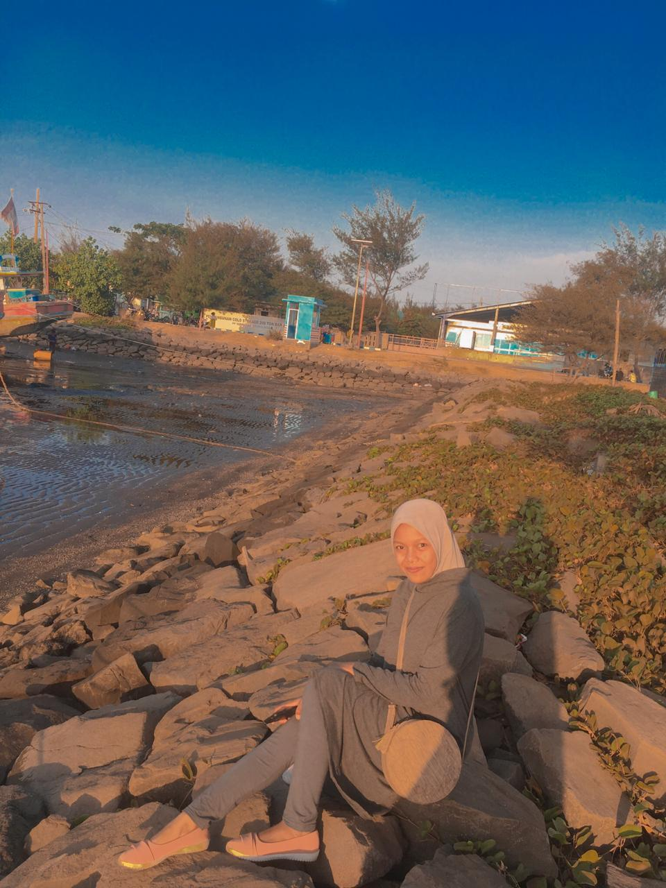
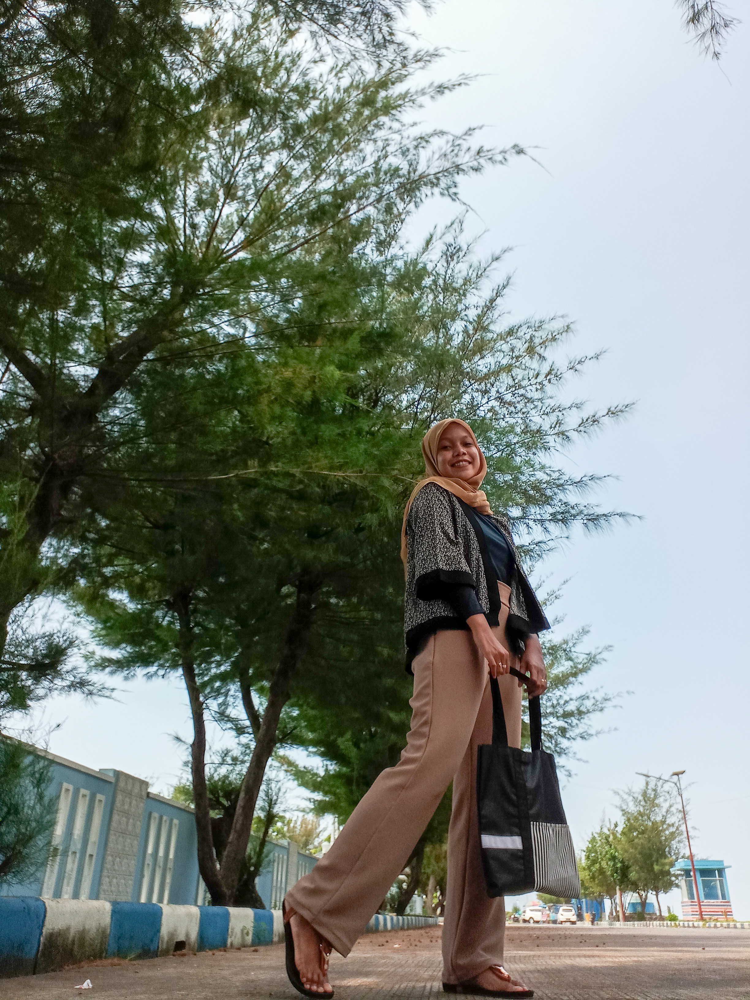
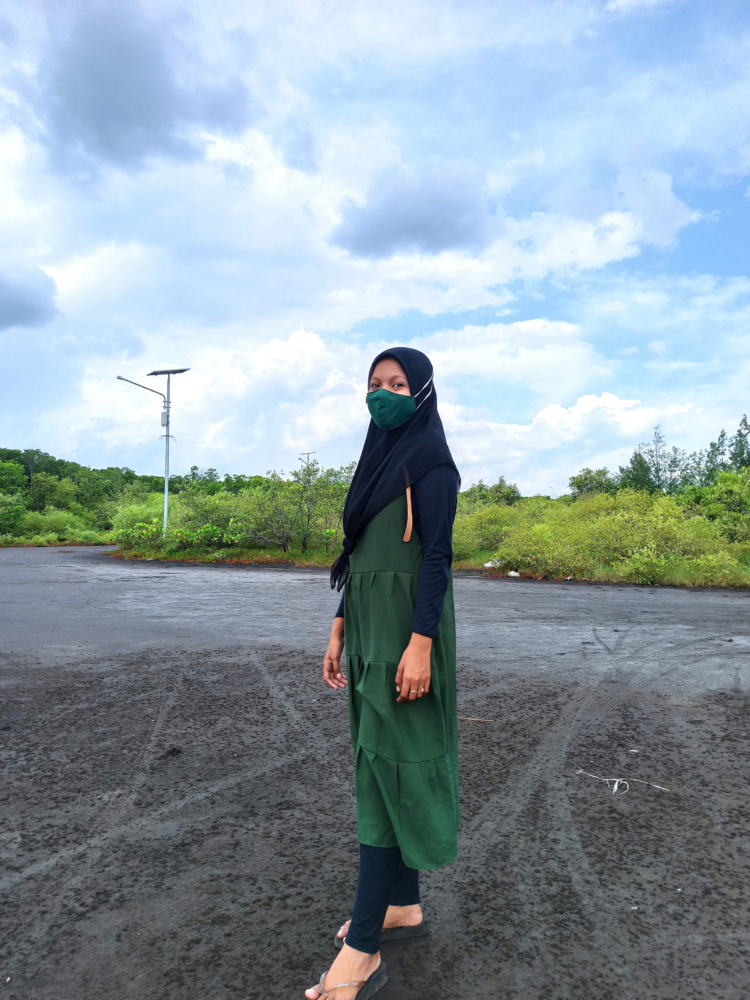
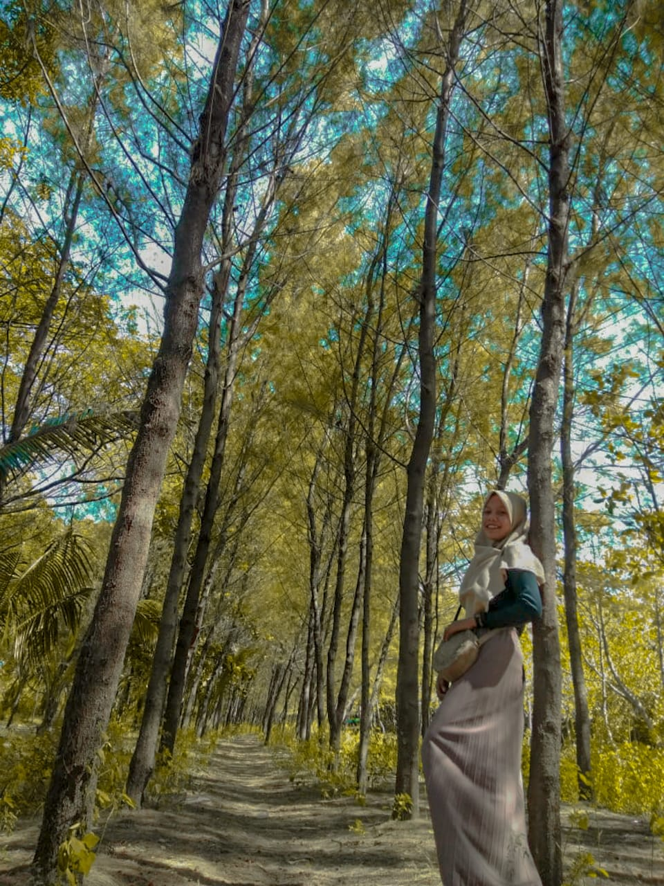

My Galery
Pantai salah satu tempat yang sangat saya sukai karena suasananya, ombaknya yang menabrak dipadukan dengan matahari yang terbenam, serta awan putih di langit juga turut menambah suasana di pantai semakin menentramkan. Berikut beberapa foto yang saya abadikan di pantai yang ada di Probolinggo!

Pantai Tanjung Tembaga

Pantai Tanjung Tembaga

Pantai Bahak

Pantai Permata

Pantai Bahak

Pantai Bentar